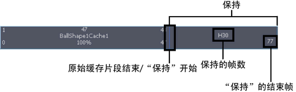
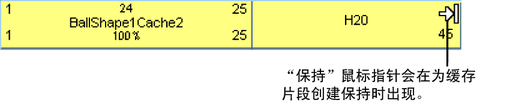
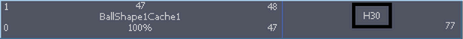

可以保持几何缓存片段以在一段固定的时间内冻结缓存片段中的最后一个变形。

保持是缓存片段的部分或伸展，其中最后一个变形将保持指定的一段时间。保持由字母 H 表示，并且显示的蓝色比片段的其余部分要浅。
保持几何缓存片段
- 在场景视图中，选择要保持其几何缓存片段的对象。
- 在“Trax 编辑器”(Trax Editor)中，选择要保持的几何缓存片段。
- 执行下列操作之一：
- 按住 Shift 键拖动片段聚光区的上部角点以在缓存片段后创建保持。

- 在“通道盒”(Channel Box)中，为缓存片段设定保持通道值。
编辑保持几何缓存片段的帧数
- 双击缓存片段的保持部分上 H 旁边的数字，键入一个代表要保持缓存片段中的最后一个变形的帧数的新值，然后按 Enter 键。
